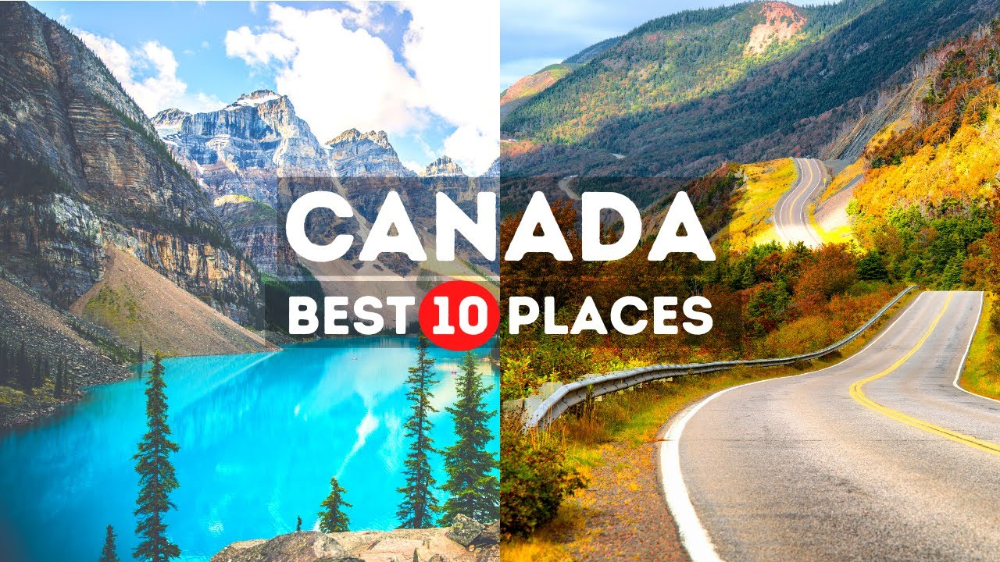

【加拿大旅游视频：值得一游的绝美之地】
Summary: This video showcases 10 breathtaking destinations in Canada, from Banff National Park's stunning landscapes to Quebec City's European charm, Niagara Falls' grandeur, and vibrant cities like Toronto and Vancouver.
摘要： 本视频介绍了加拿大10个绝美目的地，包括班夫国家公园的壮丽景色、魁北克城的欧洲风情、尼亚加拉瀑布的雄伟，以及多伦多和温哥华等充满活力的城市。

⏱️ Estimated Reading Time: 12 min
📚 高考3500生词 📚 雅思生词 📚 托福生词 📚 GRE生词 📚 UP主推荐生词
If you are looking for the amazing destination With beautiful scenery Lakes Lighthouses Mountains and valleys Canada won’t disappoint you.
如果你在寻找拥有美丽风景、湖泊、灯塔、山脉和山谷的绝佳目的地，加拿大不会让你失望。
Visit a quiet town A national park or a wilderness area Not far from a major city For a vacation filled with gorgeous views Northern Lights Waterfalls And fun outdoor adventures Canada has it all.
探访宁静的小镇、国家公园或荒野地区，距离大城市不远，享受充满壮丽景色、北极光、瀑布和有趣户外冒险的假期，加拿大应有尽有。
Let's take a look At the 10 best places to visit In Canada.
让我们一起来看看加拿大最值得一游的10个地方。
No.1 Banff National Park Canada is famous for its beautiful landscapes If you really enjoy nature You cannot miss the Banff National Park.
第一名：班夫国家公园。加拿大以其美丽的风景而闻名，如果你热爱自然，绝不能错过班夫国家公园。
The beauty of nature is all you will find In Canada's first national park Located in Alberta’s Rocky Mountains.
在这座加拿大首个国家公园里，你将发现自然的全部美丽，它坐落于阿尔伯塔省的落基山脉中。
Incredible wildlife living in those Rocky Mountains Combined with big glacial lakes Form up a beautiful breathtaking view.
生活在落基山脉中的神奇野生动物与巨大的冰川湖相结合，构成了令人叹为观止的美景。
You just cannot miss Banff's park system allows you to do some hiking Or enjoy the landscapes on a bike ride.
你绝不能错过班夫的公园系统，它允许你徒步旅行或骑自行车欣赏风景。
You can also do a kayak ride Do not miss the opportunity To be one with Canadian nature And visit this beautiful park On your next vacation.
你还可以划皮划艇，不要错过与加拿大自然融为一体的机会，并在下次假期中参观这座美丽的公园。
No.2 Niagara Falls These breathtaking waterfalls do not need too much introduction You have probably heard about them before.
第二名：尼亚加拉瀑布。这些令人惊叹的瀑布无需过多介绍，你可能早已听说过它们。
Niagara Falls is one of the most beautiful waterfalls In the whole world So you absolutely have to include it on your list When visiting the country.
尼亚加拉瀑布是全世界最美丽的瀑布之一，因此当你游览这个国家时，绝对要把它列入清单。
We assure you that you will enjoy these Canadian views Especially Horseshoe Falls Considered the most beautiful of these three falls.
我们保证你会喜欢这些加拿大景色，尤其是马蹄瀑布，它被认为是这三座瀑布中最美丽的。
No.3 Quebec City It's the only fortified city in the North American continent North of Mexico.
第三名：魁北克城。这是北美大陆墨西哥以北唯一的 fortified 城市。
Stroll through the cobblestone streets And soak in the city's magnificent heritage Storied past and European charm.
漫步在鹅卵石街道上，沉浸在这座城市辉煌的遗产、悠久的历史和欧洲魅力中。
Quebec City is one of the most enchanting places To see in Canada Because of its many activities And attractions throughout the year.
魁北克城是加拿大最迷人的地方之一，因为它全年都有许多活动和景点。
Visit the citadel of Quebec An active military installation With over 300 years of history.
参观魁北克城堡，这是一座拥有300多年历史的现役军事设施。
Relax at Battlefield's Park The site of fierce clashes between the British And French Empires.
在战场公园放松身心，这里是英国和法国帝国之间激烈冲突的遗址。
Today, within the parks 255 acres You'll find landscaped gardens Monuments Fountains and riverfront views.
如今，在这座255英亩的公园里，你会发现景观花园、纪念碑、喷泉和河滨景色。
Perched on a clifftop 60 meters above the Saint Lawrence River Is the panoramic Dufferin Terrasse.
坐落在圣劳伦斯河上方60米的悬崖顶上的是全景达弗林露台。
This 425 meter-long boardwalk Is a marvelous setting for a stroll With spectacular views.
这条425米长的木板路是散步的绝佳场所，拥有壮观的景色。
No.4 Toronto Even though Canada is famous for its wildlife And natural landscapes It also has some cool things to see in its cities.
第四名：多伦多。尽管加拿大以其野生动物和自然景观闻名，但它的城市中也有一些很酷的景点。
Try delighting yourself with some artworks In the Ontario's Art Gallery.
在安大略美术馆欣赏一些艺术品，让自己愉悦。
You must visit the famous Hill House! An amazing piece of architecture built-in 1903 By the business magnate sir Henry Mill Pellatt.
你一定要参观著名的希尔别墅！这是由商业大亨亨利·米尔·佩拉特爵士于1903年建造的一座令人惊叹的建筑。
This historical house is usually used as a museum It has also been used many times as a set For the filming of movies and tv shows.
这座历史悠久的房子通常用作博物馆，也曾多次作为电影和电视节目的拍摄场地。
It is totally worth taking a look at this creepy But fancy house.
完全值得一看这座诡异但华丽的房子。
While exploring Toronto You will find some interesting spots Like CN Tower.
在探索多伦多时，你会发现一些有趣的景点，比如加拿大国家电视塔。
Next to Ontario's lake You can find this famous tower The most popular in the country 553 meters high With a stunning 360 degrees view Which will allow you to see the whole city From a panoramic view.
在安大略湖旁边，你可以找到这座著名的塔，它是该国最受欢迎的景点，高553米，拥有令人惊叹的360度全景，让你一览整个城市。
No.5 Ottawa Canada has a lot to show And its capital could not fall behind!
第五名：渥太华。加拿大有很多值得展示的地方，而它的首都当然不会落后！
While visiting Ottawa You can delight yourself By its rich architecture A mix of picturesque gothic buildings With formalist structure.
在游览渥太华时，你可以欣赏其丰富的建筑，包括风景如画的哥特式建筑与形式主义结构的混合。
Take a walk in their streets to enjoy the view Of “Parliament hill” And other government's buildings.
在他们的街道上散步，欣赏“国会山”和其他政府建筑的景色。
There are multiple museums And art galleries you can find in Ottawa.
在渥太华，你可以找到多个博物馆和艺术画廊。
Places like Laurier's House or Canada's War Museum Have some artistic and historical pieces for you to discover.
比如劳里埃故居或加拿大战争博物馆，那里有一些艺术和历史作品供你探索。
If you enjoy nature rather than city lights Take a walk by the Rideau Waterway The oldest river in North America!
如果你喜欢自然而非城市灯光，可以在里多运河边散步，这是北美最古老的河流！
This huge river is considered world heritage And it connects Ottawa city with lake Ontario.
这条巨大的河流被视为世界遗产，它将渥太华市与安大略湖连接起来。
No.6 Golden, British Columbia Located in the middle of six national parks Golden is one of the most beautiful places to visit For outdoor and wildlife adventures.
第六名：不列颠哥伦比亚省戈尔登。位于六座国家公园中间的戈尔登是最美丽的户外和野生动物冒险目的地之一。
Summer activities here include hiking Rock climbing Mountain biking Paragliding And even heli-rafting.
这里的夏季活动包括徒步旅行、攀岩、山地自行车、滑翔伞甚至直升机漂流。
Be sure to visit Glacier Park Yoho And the Columbia Wetlands Located just south of the city.
一定要参观位于城市南部的冰川公园、幽鹤国家公园和哥伦比亚湿地。
This is North America’s longest protected wetlands And home to over 200 different species Of birds and animals.
这是北美最长的受保护湿地，是200多种鸟类和动物的家园。
If you’re interested in wildlife Stop by the Grizzly Bear Refuge At Kicking Horse Mountain Resort.
如果你对野生动物感兴趣，可以在踢马山度假村的灰熊保护区停留。
Make sure to pay a visit to its famous resident bear Boo Or take a walk on the wild side With wolves At the Wolf Centre.
一定要拜访那里著名的居民熊“布”，或者在狼中心与狼一起体验野性的一面。
No.7 Vancouver Vancouver is meant to be experienced outdoors Thanks to its temperate climate and abundance of rain.
第七名：温哥华。温哥华因其温和的气候和丰富的雨水而适合户外体验。
The city has its fair share of lush outdoor spaces The largest among them being Stanley Park.
这座城市拥有丰富的郁郁葱葱的户外空间，其中最大的是斯坦利公园。
If you're not up for strolling its nearly 1,000 acres Visit some of the city's other beloved outdoor attractions Lke Queen Elizabeth Park Or VanDusen Botanical Garden.
如果你不想漫步在近1000英亩的公园里，可以参观城市其他受欢迎的户外景点，比如伊丽莎白女王公园或范杜森植物园。
For a real thrill Take a walk across the Capilano Suspension Bridge Which hovers 230 feet Above Capilano River.
想要真正的刺激，可以步行穿过卡皮拉诺吊桥，它悬在卡皮拉诺河上方230英尺处。
When you're ready to refuel Uou'll have your pick of delicious market eats At Granville Island And Lonsdale Quay.
当你准备补充能量时，可以在格兰维尔岛和朗斯代尔码头选择美味的市场食物。
No.8 Jasper National Park You cannot enjoy this country without visiting this park.
第八名：贾斯珀国家公园。如果不参观这座公园，你就无法真正享受这个国家。
Before you even get there You will have already enjoyed one of the most beautiful views By crossing the Icefields Parkways.
在你到达之前，穿过冰原大道，你已经可以欣赏到最美丽的景色之一。
There You can gaze at the Athabasca Glacier And enjoy the view Of various turquoise rivers.
在那里，你可以凝视阿萨巴斯卡冰川，欣赏各种绿松石色的河流景色。
And ıf you are lucky enough You will be able to see a grizzly bear! Just not up too close.
如果你足够幸运，还能看到灰熊！只是不要太靠近。
Another impressive thing that characterizes Canada is the northern lights In Jasper National Park You will be able to see Northern lights from May Until September.
另一个代表加拿大的令人印象深刻的事物是北极光。在贾斯珀国家公园，你可以从五月到九月看到北极光。
No.9 Cape Breton Island Located on the East Coast Cape Breton makes for a great place for a road trip.
第九名：布雷顿角岛。位于东海岸的布雷顿角岛是公路旅行的绝佳地点。
One of the highlights of the island Is the Cabot Trail Which is a 300km route Through the Cape Breton Highlands National Park.
岛上的亮点之一是卡伯特小径，这是一条300公里的路线，穿过布雷顿角高地国家公园。
Along the way you’ll be driving through a mix of terrain Including scenic coastal roads and hills.
沿途你将驾车穿越多种地形，包括风景如画的海岸公路和山丘。
For those feeling adventurous Cape Breton offers various hiking routes Including the Skyline Trail Which you could explore For epic views Of rural Canada.
对于那些喜欢冒险的人，布雷顿角提供各种徒步路线，包括天际线小径，你可以探索它，欣赏加拿大乡村的壮丽景色。
No.10 St. John's In Canada's far eastern province of Newfoundland And Labrador Is the historic and friendly city of St. John's.
第十名：圣约翰斯。位于加拿大最东部的纽芬兰与拉布拉多省，是历史悠久且友好的圣约翰斯市。
This is the main gateway for air travelers To the island of Newfoundland But many people Come simply to enjoy the city.
这是前往纽芬兰岛的主要航空门户，但许多人只是来享受这座城市。
Colorful buildings line the sloping streets that run along hills With views out over the harbor.
色彩缤纷的建筑排列在沿着山坡的倾斜街道上，俯瞰海港的景色。
The city also has numerous historic sites and attractions Including Signal Hill George Street and Cape Spear Lighthouse.
这座城市还有许多历史遗迹和景点，包括信号山、乔治街和斯皮尔角灯塔。
But the real appeal is the vibrant atmosphere The people And the maritime culture That makes this city So unique from mainland Canada.
但真正的吸引力是充满活力的氛围、人民和海洋文化，这使得这座城市与加拿大本土如此不同。
From the cosmopolitan streets of Toronto To the mountain peaks of the Canadian Rockies Canada features a diverse set of vacation destinations.
从多伦多的国际化街道到加拿大落基山脉的山峰，加拿大拥有多样化的度假目的地。
So, which one of these places in Canada Are you planning to visit during your next holiday?
那么，你计划在下次假期中游览加拿大的哪个地方呢？
Don't think too much Just pack your bags And book your trip to Canada And try visiting each of the above listed places.
不要想太多，收拾好行李，预订你的加拿大之旅，并尝试游览上面列出的每个地方。
If you enjoyed this video Be sure to give it a like And click subscribe Thanks for watching.
如果你喜欢这个视频，请点赞并点击订阅。感谢观看。